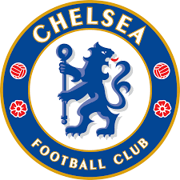

YouthClub FC
Famous clubs
Manchester United FC
It is a professional football club based in Old Trafford, Greater Manchester, England, that competes in the Premier League, the top flight of English football. Manager: Ole Gunnar Solskjær Trending Owner: Glazer ownership of Manchester United Founder: Lancashire and Yorkshire Railway Founded: 1878, Newton Heath, Manchester, United Kingdom Parent organization: Manchester United Plc Locations: Manchester, United Kingdom, Stretford, United Kingdom
Real Madrid Football Club
It is commonly referred to as Real Madrid, is a Spanish professional football club based in Madrid. Founded on 6 March 1902 as Madrid Football Club, the club has traditionally worn a white home kit since inception. Manager: Carlo Ancelotti Arena/Stadium: Santiago Bernabéu Stadium President: Florentino Pérez Founded: March 6, 1902 Nicknames: La Casa Blanca (The White House), MORE Founders: Adolfo Meléndez, Juan Padrós, Carlos Padrós, Julián Palacios
Barcelona Football club
It is commonly referred to as Barcelona and colloquially known as Barça, is a Spanish professional football club based in Barcelona, Spain, that competes in La Liga, the top flight of Spanish football. Manager: Ronald Koeman President: Joan Laporta Founder: Joan Gamper Founded: November 29, 1899, Barcelona, Spain Arena/Stadium: Camp Nou Leagues: LaLiga, UEFA Champions League, Copa del Rey
Chelsea Football Club
It is an English professional football club based in Fulham, West London. Founded in 1905, the club competes in the Premier League, the top division of English football. Manager: Thomas Tuchel Trending Arena/Stadium: Stamford Bridge Founded: March 10, 1905 Headquarters: London, United Kingdom Nicknames: Blues, Pensioners, The Blues, The Pensioners Founders: Gus Mears, Joseph Mears